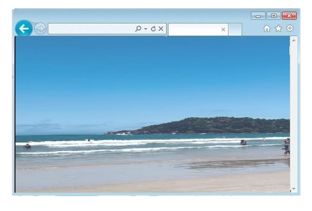
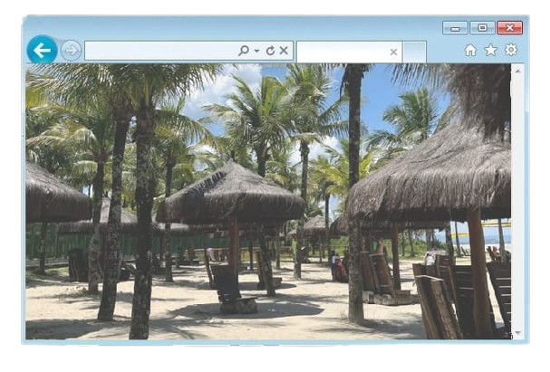

População: ~64 mil habitantes (2022)
Localização: litoral de São Paulo (Baixada Santista)
Bioma: Mata Atlântica
Fundação: município criado em 1991 (antes pertencia a Santos)
Aniversário: 19 de maio
Característica: Estância Balneária (forte vocação turística)

O povoamento da região de Bertioga teve início em 1531, com a chegada do explorador português Martim Afonso de Sousa, durante as primeiras expedições colonizadoras do Brasil. A área, localizada no litoral paulista, rapidamente se tornou estratégica tanto para os portugueses quanto para os povos indígenas que já habitavam a região, especialmente os tamoios. Ao longo do século XVI, Bertioga foi palco de intensos conflitos entre colonizadores e indígenas, refletindo a disputa pelo controle do território. Um dos marcos mais importantes desse período foi a construção do Forte São João, em 1547. Considerado uma das fortificações mais antigas do Brasil, o forte foi essencial para a defesa do litoral contra invasões estrangeiras e ataques indígenas, além de servir como ponto de apoio para a expansão portuguesa. A região também teve papel relevante em eventos históricos maiores, como a fundação da cidade do Rio de Janeiro, em 1565, funcionando como base estratégica para expedições militares e logísticas. Apesar de sua importância inicial, Bertioga permaneceu por muitos séculos como uma pequena vila de pescadores, com economia baseada principalmente na pesca artesanal e em atividades de subsistência. O isolamento geográfico contribuiu para um crescimento lento ao longo do período colonial e imperial. Foi somente a partir da década de 1940 que a região começou a se transformar, impulsionada pelo desenvolvimento do turismo no litoral paulista. A construção de estradas e a melhoria do acesso favoreceram a chegada de visitantes, atraídos pelas praias e pela natureza preservada. Esse processo acelerou a urbanização e o crescimento econômico local. Finalmente, em 1991, Bertioga conquistou sua emancipação político-administrativa, tornando-se oficialmente um município independente. Desde então, a cidade vem se desenvolvendo como um importante destino turístico, conciliando sua rica história com a valorização de seu patrimônio natural e cultural.

Forte dependência do turismo de praia (balneário)
Possui 33 km de praias
Grande número de casas de veraneio (uso ocasional)
Economia baseada no setor de serviços
Desafio: infraestrutura precisa atender grande população no verão
População relativamente jovem
Crescimento gradual de idosos
Diversidade racial, com presença maior de população parda/negra e indígena comparada ao estado
Renda média distribuída principalmente entre 2 e 5 salários mínimos
Presença de rios importantes (Itapanhaú, Guaratuba, Itaguaré etc.)
Relevo com:
Serra do Mar
Planície litorânea
Áreas de mangue e Mata Atlântica preservada
Forte São João (mais antigo do Brasil)
Aldeia indígena Rio Silveira
Vila de Itatinga (usina hidrelétrica histórica)
Riviera de São Lourenço (bairro planejado)